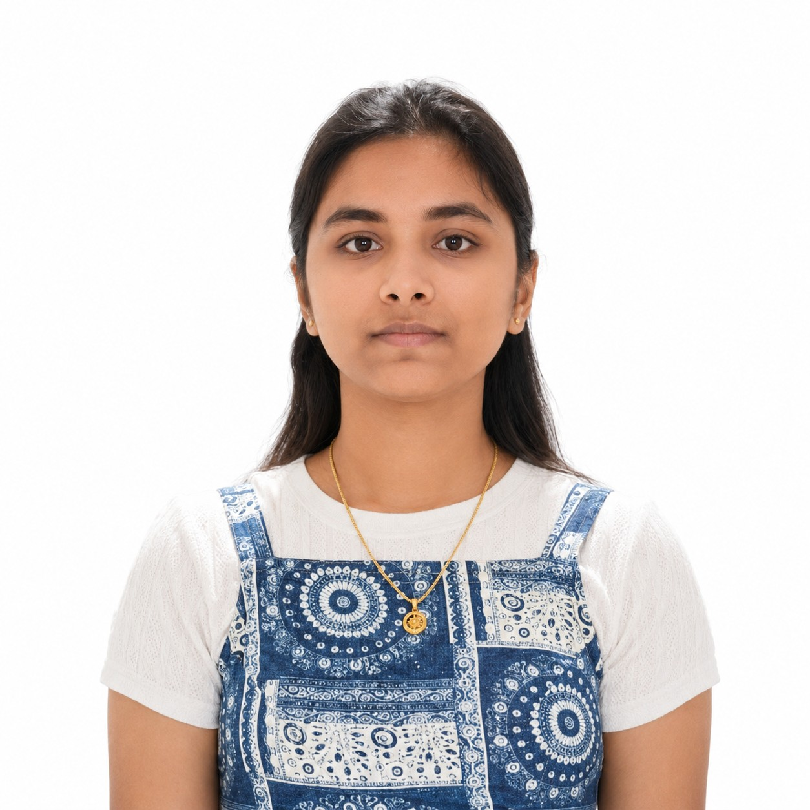

Passionate about Artificial Intelligence, Machine Learning, Web Development, and Problem Solving.
+91 7222999780
Andhra Pradesh, India

I am a passionate Computer Science Engineering student specializing in Artificial Intelligence and Machine Learning (AIML). I have a strong interest in building intelligent systems, solving real-world problems, and exploring modern technologies.
My technical interests include Machine Learning, Deep Learning, Natural Language Processing, Computer Vision, and Web Development. I enjoy working on projects that combine creativity, logic, and innovation.
I have hands-on experience in developing machine learning and deep learning projects such as Fraud Detection Systems, Movie Recommendation Systems, and Skin Disease Detection models. Through these projects, I gained practical knowledge in data preprocessing, model training, evaluation techniques, and problem-solving approaches.
Apart from AI and development, I continuously improve my problem-solving skills through Data Structures and Algorithms practice and by learning new technologies. I am also interested in Generative AI, Large Language Models (LLMs), and modern AI applications.
My goal is to become a skilled Software Engineer and AI Engineer who can contribute to innovative and impactful technological solutions.
Pursuing Computer Science Engineering with specialization in Artificial Intelligence and Machine Learning, building strong foundations in algorithms, data science, neural networks, and software development.
Developed intelligent systems including Fraud Detection and Recommendation Systems using Python, Scikit-learn, and data preprocessing techniques.
Worked on CNN-based Skin Disease Detection systems, explored transfer learning, image processing, and deep learning model optimization.
Started exploring Large Language Models (LLMs), Prompt Engineering, Retrieval-Augmented Generation (RAG), and modern AI-powered applications.
Aspiring to become a skilled AI Engineer and Software Developer, building impactful intelligent systems and scalable modern applications.
Vignan University
Pursuing Computer Science Engineering with specialization in Artificial Intelligence and Machine Learning.
SRI CHAITANYA JUNIOR COLLEGE
Completed Intermediate education with focus on Mathematics, Physics, and Chemistry.
sRI CHAITANYA TECHNO SCHOOL
Successfully completed secondary education with strong academic performance and active participation in extracurricular activities.
Python, Java, C
Data Structures & Algorithms, OOP, OS Basics, DBMS
Scikit-learn, Supervised Learning, Feature Engineering, Model Evaluation
CNNs, Transfer Learning, Model Optimization
LLMs, Prompt Engineering (RAG), Hugging Face
NLP, Computer Vision
Hadoop, PySpark
MySQL
HTML, CSS, JavaScript
NPTEL
Completed certification covering relational databases, SQL, normalization, transactions, and database design concepts.
NPTEL
Learned concepts related to teamwork, leadership, communication, and workplace behavior.
NPTEL
Explored digital business models, e-commerce systems, and online business strategies.
HackerRank
Demonstrated foundational knowledge in CSS styling, layouts, responsiveness, and web design.
Google Cloud
Learned the fundamentals of LLMs, generative AI concepts, and real-world AI applications.
Simplilearn
Explored Generative AI basics, prompt engineering, and modern AI tools and workflows.
Python • Machine Learning
Developed supervised Machine Learning models to detect fraudulent financial transactions from structured datasets.
Addressed class imbalance using resampling techniques and evaluated model performance using precision, recall, and F1-score metrics.
Designed a scalable preprocessing, training, and evaluation pipeline for multiple ML models.
Python • Machine Learning
Built a content-based recommendation system using cosine similarity and vector representations.
Implemented ranking logic to generate personalized movie recommendations based on user interests.
Simulated a real-world recommendation pipeline including preprocessing, feature extraction, and inference stages.
Python • Deep Learning
Implemented a CNN-based image classification model for skin disease detection using Computer Vision techniques.
Applied image preprocessing, augmentation, and transfer learning techniques to improve model performance.
Optimized model accuracy using validation metrics and tuning strategies.
geethaakshaya0423@gmail.com
+91 7222999780
Andhra Pradesh, India